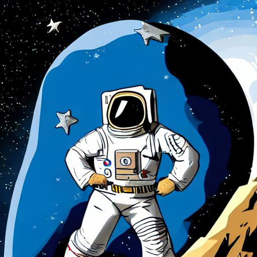

Hey,
Im Astroman
Im Astroman
IAM Astroman, the metaphorical astronaut, Explores the unknown, his mission's forethought. He travels beyond what most have seen, With sights unimaginable, he lives his dream. In the vacuum of space, he floats and flies, His helmet and suit his only ally. He braves the harsh and endless void, Where no one else could dare deploy. He discovers planets and galaxies far, Their mysteries unravel, their beauty bizarre. He sees the universe in a whole new light, With every discovery, his curiosity takes flight. The vast expanse of space is his playground, His spacecraft, a tool for exploring all around. The dangers are many, but he remains brave, And with his skills and knowledge, he'll always be saved. He is a symbol of mankind's quest, For knowledge and understanding at its best. IAM Astroman, the astronaut metaphor, Inspires us all to reach for the stars and soar.